|
Zint Barcode Generator |
||
|---|---|---|
One-Dimensional Symbols are what most people associate with the term barcode. They consist of a number of bars and a number of spaces of differing widths.
Developed by Intermec in 1977, Code 11 is similar to Code 2 of 5 Matrix and is primarily used in telecommunications. The symbol can encode any length string consisting of the digits 0-9 and the dash character (-). One modulo-11 check digit is calculated.
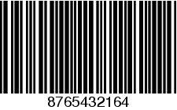
Code 2 of 5 is a family of one-dimensional symbols, 8 of which are supported by Zint.
Also known as Code 2 of 5 Matrix is a self-checking code used in industrial applications and photo development. Standard Code 2 of 5 will encode any length numeric input (digits 0-9).
Used for baggage handling in the air-transport industry by the International Air Transport Agency, this self-checking code will encode any length numeric input (digits 0-9) and does not include a check digit.
5.1.2.3 Industrial Code 2 of 5
Industrial Code 2 of 5 can encode any length numeric input (digits 0-9) and does not include a check digit.
5.1.2.4 Interleaved Code 2 of 5
This self-checking symbology encodes pairs of numbers, and so can only encode an even number of digits (0-9). If an odd number of digits is entered a leading zero is added by Zint. No check digit is added.
5.1.2.5 Code 2 of 5 Data Logic
Data Logic is a proprietary variation of Standard Code 2 of 5. Data Logic does not include a check digit and can encode any length numeric input (digits 0-9).
ITF-14, also known as UPC Shipping Container Symbol, Case Code and EAN-14, is based on Interleaved Code 2 of 5 and requires a 13 digit numeric input (digits 0-9). One modulo-10 check digit is calculated.
5.1.2.7 Deutsche Post Leitcode
Leitcode is based on Interleaved Code 2 of 5 and is used by Deutsche Post for mailing purposes. Leitcode requires a 13-digit numerical input and includes a check digit.
5.1.2.8 Deutsche Post Identcode
Identcode is based on Interleaved Code 2 of 5 and is used by Deutsche Post for mailing purposes. Identcode requires an 11-digit numerical input and includes a check digit.
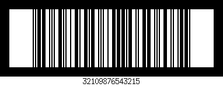
5.1.3 Universal Product Code (EN 797)
UPC-A is used in the United States for retail applications. The symbol requires an 11 digit article number. The check digit is calculated by Zint. In addition EAN-2 and EAN-5 add-on symbols can be added using the + character. For example, to draw a UPC-A symbol with the data 72527270270 with an EAN-5 add-on showing the data 12345 use the command:
zint --barcode=34 -d 72527270270+12345
or encode a data string with the + character included:
my_symbol->symbology
= BARCODE_UPCA;
error = ZBarcode_Encode_and_Print(my_symbol,
"72527270270+12345");
UPC-E is a zero-compressed version of UPC-A developed for smaller packages. The code requires a 6 digit article number (digits 0-9). The check digit is calculated by Zint. EAN-2 and EAN-5 add-on symbols can be added using the + character as with UPC-A. In addition Zint also supports Number System 1 encoding by entering a 7-digit article number stating with the digit 1. For example:
zint --barcode=37 -d 1123456
or
my_symbol->symbology
= BARCODE_UPCE;
error = ZBarcode_Encode_and_Print(my_symbol,
"1123456");
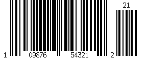
5.1.4 European Article Number (EN 797)
5.1.5.1 EAN-2, EAN-5, EAN-8 and EAN-13
The EAN system is used in retail across Europe and includes standards for EAN-2 and EAN-5 add-on codes, EAN-8 and EAN-13 which encode 2, 5, 7 or 12 digit numbers respectively. Zint will decide which symbology to use depending on the length of the input data. In addition EAN-2 and EAN-5 add-on symbols can be added using the + symbol as with UPC symbols. For example
zint --barcode=13 -d 54321
will encode a stand-alone EAN-5, whereas
zint --barcode=13 -d 7432365+54321
will encode an EAN-8 symbol with an EAN-5 add-on. As before these results can be achieved using the API:
my_symbol->symbology
= BARCODE_EANX
error = ZBarcode_Encode_and_Print(my_symbol,
"54321");
error = ZBarcode_Encode_and_Print(my_symbol,
"7432365+54321");
All of the EAN symbols include check data which is added by Zint.
EAN-13 symbols (also known as Bookland EAN-13) can also be produced from 9-digit SBN, 10-digit ISBN or 13-digit ISBN-13 data. The relevant check digit needs to be present in the input data and will be verified before the symbol is generated. In addition EAN-2 and EAN-5 add-on symbols can be added using the + symbol as with UPC symbols.
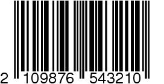
Also known as Plessey Code, this symbology was developed by the Plessey Company Ltd. in the UK. The symbol can encode any length data consisting of digits (0-9) or letters A-F and includes a CRC check digit.
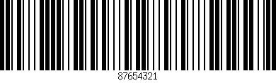
Based on Plessey and developed by MSE Data Corporation, MSI Plessey is available with a range of check digit options available by setting option_2 or by using the –ver= switch. Any length numeric (digits 0-9) input can be encoded. The table below shows the options available:
|
Value of option_2 |
Check Digits |
|---|---|
|
0 |
None |
|
1 |
Modulo-10 |
|
2 |
Modulo-10 & Modulo-10 |
|
3 |
Modulo-11 |
|
4 |
Modulo-11 & Modulo-10 |
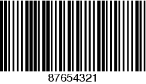
Telepen Alpha was developed by SB Electronic Systems Limited and can encode any length of ASCII text input. Telepen includes a modulo-127 check digit.
Telepen Numeric allows compression of numeric data into a Telepen symbol. Data can consist of pairs of numbers or pairs consisting of a numerical digit followed an X character. For example: 466333 and 466X33 are valid codes whereas 46X333 is not (the digit pair “X3” is not valid). Includes a modulo-127 check digit.
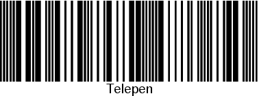
5.1.8.1 Standard Code 39 (ISO 16388)
Standard Code 39 was developed in 1974 by Intermec. Input data can be of any length and supports the characters 0-9, A-Z, dash (-), full stop (.), space, asterisk (*), dollar ($), slash (/), plus (+) and percent (%). The original standard (symbology 8) does not require a check digit but a modulo-43 check digit can be added if required by setting option_2 = 1 or using --ver=1.
Also known as Code 39e and Code39+, this symbology expands on Standard Code 39 to provide support to the full ASCII character set. The original standard (symbology 9) does not require a check digit but a modulo-43 check digit can be added if required by setting option_2 = 1 or using --ver=1.
A variation of Extended Code 39, Code 93 also supports full ASCII text. Two check digits are added.
PZN is a Code 39 based symbology used by the pharmaceutical industry in Germany. PZN encodes a 6 digit number and includes a modulo-10 check digit.
LOGMARS (Logistics Applications of Automated Marking and Reading Symbols) is a variation of the Code 39 symbology used by the US Department of Defence. LOGMARS encodes the same character set as Standard Code 39 and adds a modulo-43 check digit.
A variation of Code 39 used by the Italian Ministry of Health (Ministero della Sanità) for encoding pharmacode data on pharmaceutical products. Requires a numeric input up to 8 digits in length. Check digit is added by Zint.
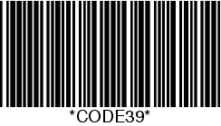
Also known as NW-7, Monarch, ABC Codabar, USD-4, Ames Code and Code 27, this symbology was developed in 1972 by Monarch Marketing Systems for retail purposes. The American Blood Commission adopted Codabar in 1977 as the standard symbology for blood identification. Codabar can encode any length string starting and ending with the letters A-D and containing between these letters the numbers 0-9, dash (-), dollar ($), colon (:), slash (/), full stop (.) or plus (+). No check digit is generated.
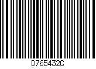
Developed by Laetus, Pharmacode One-Track is used for the identification of pharmaceuticals. The symbology is able to encode whole numbers between 3 and 131070.
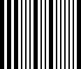
5.1.11.1 Standard Code 128 (ISO 15417)
One of the most widely used one-dimensional barcode symbologies, Code 128 was developed in 1981 by Computer Identics. This symbology supports full ASCII text and uses a three-mode system to compress the data into a smaller symbol. Zint automatically switches between modes and adds a modulo-103 check digit. Code 128 is the default barcode symbology used by Zint. In addition Zint supports the encoding of Latin-1 (non-English) characters in Code 128 symbols [1]. The Latin-1 character set is shown in Appendix A.
It is sometimes advantageous to stop Code 128 from using subset mode C which compresses numerical data. The BARCODE_CODE128B option suppresses mode C in favour of mode B.
A variation of Code 128 also known as UCC/EAN-128, this symbology is defined by the GS1 General Specification. Application Identifiers (AIs) should be entered using [square brackets] notation. These will be converted to (round brackets) for the human readable text. This will allow (round brackets) to be used in the data strings to be encoded. Fixed length data should be entered at the appropriate length for correct encoding - this is not checked by Zint and incorrect length data will result in a symbol which does not read correctly (see Appendix C). GS1-128 does not support extended ASCII characters. Check digits for GTIN data (AI 01) are not generated and need to be included in input data. The following is an example of a valid GS1-128 input:
zint --barcode=16 -d "[01]98898765432106[3202]012345[15]991231"
A shorter version of GS1-128 which encodes GTIN data only. A 13 digit number is required. GTIN check digit and AI (01) are added by Zint.
A variation of Code 128 the Nummber der Versandeinheit standard includes both modulo-10 and modulo-103 check digits. NVE-18 requires a 17 digit numerical input.
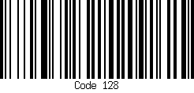
5.1.12 GS1 DataBar (ISO 24724)
Also known as RSS (Reduced Spaced Symbology) these symbols are due to replace GS1-128 symbols starting in 2010 in accordance with the GS1 General Specification. If a GS1 DataBar symbol is to be printed with a 2D component as specified in ISO 24723 set option_1 = 2 or use the option --mode=2 at the command prompt. See the section Composite Symbols to generate DataBar symbols with 2D components.
5.1.12.1 DataBar-14 and DataBar-14 Truncated
Also known as RSS-14 the DataBar-14 encodes a 13 digit item code. A check digit and application identifier of (01) are added by Zint. Note that for full standard compliance symbol height should be greater than or equal to 33 modules. For DataBar-14 Truncated set the symbol height to a minimum of 13.
Also known as RSS Limited the DataBar Limited symbol also encodes 13 digit item codes and can be used in the same way as DataBar-14 above. DataBar Limited, however, is limited to data starting with digits 0 and 1 (i.e. numbers in the range 0 to 1999999999999). As with DataBar-14 a check digit and application identifier of (01) are added by Zint.
Also known as RSS Expanded this is a variable length symbology capable of encoding data from a number of AIs in a single symbol. AIs should be encased in [square brackets] in the input data. This will be converted to (rounded brackets) before it is included in the human readable text attached to the symbol. This method allows the inclusion of rounded brackets in the data to be encoded. GTIN data (AI 01) should also include the check digit data as this is not calculated by Zint when this symbology is encoded. Fixed length data should be entered at the appropriate length for correct encoding - this is not checked by Zint and incorrect length data will result in a symbol which does not read correctly (see Appendix C). The following is an example of a valid DataBar Expanded input
zint --barcode=31 -d "[01]98898765432106[3202]012345[15]991231"
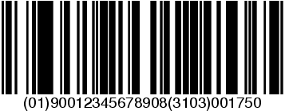
The Korean Postal Barcode is used to encode a six-digit number and includes one check digit.
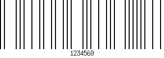
|
Types of Symbol |
|
Stacked Symbols |